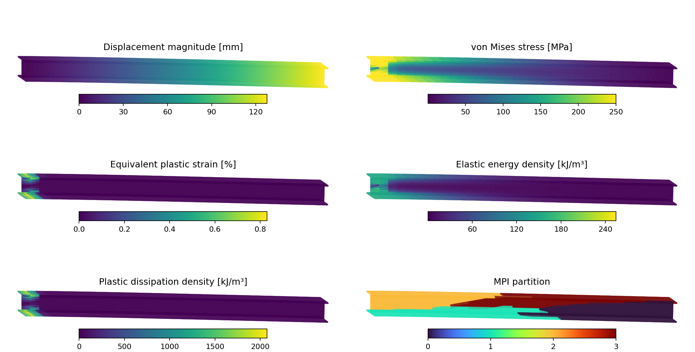

A
Esmeralda · Finite-element study
The I-beam benchmark
Three solvers, one steel cantilever. Follow the beam as increasing self-weight drives it from elastic bending into plastic flow.
Deformation and material fields
Inside the load history
B
3D requires WebGL 2. The plot, timing tables and sample field image are available below.

von Mises stress [MPa]
Both views share one accepted load increment and color scale. Cell fields show four-point means on exterior tetrahedral faces. Drag to orbit or scroll inside a view to zoom.
Load response
180 validated CPU runs
Rank scaling and I/O
Median over three repeats. Each cell shows minimal and full field output for the same solver and rank setting.
RTX 5090 comparison
Single-rank FEniCSx on the same GPU host for both backends. Assembly and field output ran on the host. The CUDA backend solved the linear system in FP64. Sparse QR exceeded available GPU memory on the fine mesh, which used conjugate gradients.
Universidad de los Andes · Chile
Esmeralda compute cluster
CPU · node12 and node13
AMD Ryzen 9 5950X
- Cores per host
- 16 physical / 32 threads
- RAM
- 62.7 GiB visible per host
- Fabric
- Dual-port 25 GbE ConnectX-4 Lx, RoCE
- Node12
- Gigabyte X570 AORUS ELITE WIFI · BIOS F32
- Node13
- Gigabyte X570S AORUS PRO AX · BIOS F5
GPU · gpu01
NVIDIA GeForce RTX 5090
- Host CPU
- AMD Ryzen 9 9950X · 16 physical cores
- VRAM
- 32,607 MiB reported
- Driver
- NVIDIA 615.71.09
- Runtime
- JAX 0.11.2 · CUDA FP64
Model
6 m steel cantilever, fully fixed at the root. I-section 400 × 200 mm, flange 25 mm and web 14 mm. Small-strain J2 perfect plasticity with E = 210 GPa, ν = 0.30, yield stress 250 MPa and density 7,850 kg/m³. Gmsh ten-node tetrahedra use four integration points. Uncertainty was not quantified.
Runtime
Debian 13, Slurm 24.11.5, Open MPI 5 and shared NVMe-backed NFS. OpenSeesMP 3.8.0 Ladruño, Kratos 10.3.0 with Amesos MUMPS, and FEniCSx DOLFINx 0.11.0 with PETSc 3.25.6. The 32-rank CPU cases run on both hosts with 16 physical cores per host.